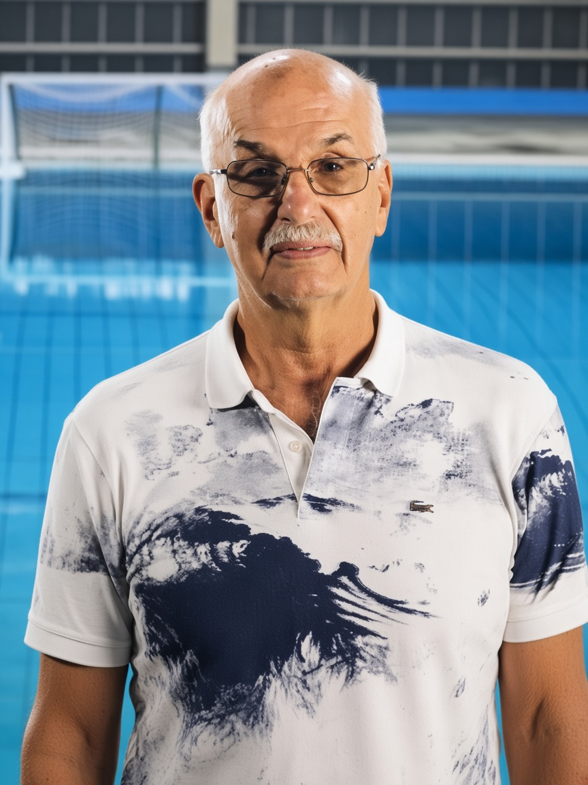

Su historia
Del agua nunca se fue
Se formó en el Club Gimnasia y Esgrima de Rosario, la institución a la que estuvo ligado toda su vida. Defendió esos colores como jugador y vistió el gorro del Seleccionado Argentino durante [años]. Los que lo enfrentaron recuerdan [su lectura del juego / su marca / su temperamento].
Cuando dejó de jugar no se alejó del borde de la pileta: se paró del otro lado. Dirigió a [categorías y equipos] de Gimnasia y Esgrima y formó a [generaciones] de jugadores y jugadoras. Bajo su conducción, [logro o hito deportivo].
Fue entrenador del Seleccionado Nacional en los JJPP de Mar del Plata 1995. Pero por encima de los cargos fue un referente: el que llegaba primero, apagaba las luces último y convencía a generaciones enteras de que el waterpolo valía la pena.

“[Una frase suya, de esas que repetía al borde de la pileta]”
Testimonios
Lo que dejó en la gente
Galería
Una vida al borde del agua
Tocá una foto para verla en grande. [Poné las imágenes en img/ y listalas en data.json → galeria.]
Trayectoria
Los años, como boyas en la soga
La propuesta
Su nombre para el nuevo natatorio
Rosario tiene su nuevo natatorio olímpico para los Juegos Odesur 2026. Proponemos que lleve el nombre de quien le dio al waterpolo de la ciudad su lugar. La decisión está en manos [del Concejo Municipal / de la Municipalidad de Rosario], y una muestra de apoyo de la comunidad puede inclinar la balanza.
Natatorio Enrique “Gato” Piedfort
Estamos preparando un sistema de apoyo verificado para que cada adhesión cuente de verdad. Abre muy pronto.
Sumá a otros
Compartí este homenaje
Cuantas más personas lo conozcan, más fuerte suena la propuesta. Escaneá el código con la cámara del teléfono o pasá el enlace.